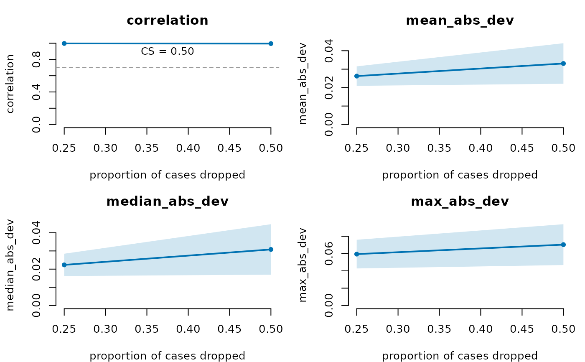

Assess the stability of edge weights when cases are dropped
Source:R/reliability.R
net_casedrop_reliability.Rdnet_casedrop_reliability() assesses how stable the edge weights of a
network are when cases are dropped. It applies the case-dropping procedure
of Epskamp, Borsboom and Fried (2018) to the edge weights rather than to node
centralities: the network is re-estimated on subsets from which an
increasing proportion of cases has been removed, and each subset's edge
weights are compared with the full-sample edge weights. The edge weights
state which variables are associated, and how strongly; if the network
describes the population rather than the particular sample, the edge weights
estimated from a subset of the cases should resemble those of the full
sample.
The function draws iter subsets without replacement at every proportion in
drop_prop, re-estimates the network on each, and compares the subset and
full-sample edge weights by their correlation and by the mean, median and
maximum absolute difference. It summarizes each of these metrics by drop
proportion and computes an edge-weight CS-coefficient: the largest
proportion at which the share of subsets whose edge-weight correlation
exceeds threshold itself exceeds certainty, or 0 when no proportion
qualifies.
It returns one row per metric and drop proportion, with the edge-weight CS-coefficient kept alongside the table.
net_stability() applies the same procedure to node centralities, and
net_split_reliability() compares networks estimated on two halves of the
sample.
Usage
net_casedrop_reliability(
data,
method = "glasso",
drop_prop = seq(0.1, 0.9, by = 0.1),
iter = 100L,
threshold = 0.7,
certainty = 0.95,
cor_method = c("pearson", "spearman", "kendall"),
labels = NULL,
estimator_args = list(),
...
)
# S3 method for class 'psychnet_casedrop'
print(x, ...)
# S3 method for class 'psychnet_casedrop'
plot(x, ...)Arguments
- data
A data frame or matrix with one row per observation, or a psychnet_group estimated from a data set (assessed per group).
- method
The estimator, as in
psychnet(). Default"glasso".- drop_prop
Proportions of cases to drop, each in (0, 1). Default
seq(0.1, 0.9, by = 0.1). Each must remove at least one case and keep at least two.- iter
Number of subsets per proportion. Default
100.- threshold
Edge-weight correlation a subset must exceed to count as stable, a number in (0, 1). Default
0.7.- certainty
Share of stable subsets that must be exceeded, a number in (0, 1). Default
0.95.- cor_method
Correlation between subset and full-sample edge weights:
"pearson"(default, as inbootnet),"spearman"or"kendall".- labels
Optional node labels, one per node.
- estimator_args
Named list of arguments for the estimator. Use it for an estimator argument that shares a name with an argument of this function, e.g.
estimator_args = list(cor_method = "spearman"); such names given in...do not reach the estimator.- ...
Further arguments for the estimator (
net_casedrop_reliability()); ignored by the methods.- x
A
psychnet_casedropobject.
Value
A data frame of class psychnet_casedrop, one row per metric and
drop proportion, with columns metric ("correlation",
"mean_abs_dev", "median_abs_dev" or "max_abs_dev"), drop_prop
(nominal), actual_drop (the proportion dropped after rounding to whole
cases), mean, sd and n_valid (subsets in which the metric was
defined; mean and sd are NA when too few were). The edge-weight
CS-coefficient and the correlation of every subset are kept with the
table; print() shows the CS-coefficient above the table. plot() draws
the four metrics against the proportion dropped, each with a band of
+/- 1 SD, and marks threshold and the CS-coefficient on the correlation
panel. print() and plot() return x invisibly. For a
psychnet_group, the function returns one result per group.
Details
Both comparisons in the CS rule are strict, as in bootnet::corStability().
The edge-weight correlation of a subset is 0 when either edge-weight vector
is constant (for example an empty subset network), and undefined when fewer
than two edges are available. An undefined correlation, or a subset on
which the network could not be estimated, counts as not exceeding
threshold, so such subsets never raise the CS-coefficient (bootnet
instead leaves undefined correlations out). Each subset is passed to the
estimator as the full data would be (see net_boot()).
Functions
print(psychnet_casedrop): The edge-weight CS-coefficient, followed by the table of metrics.plot(psychnet_casedrop): The four metrics against the proportion of cases dropped.
Conditions
psychnet_bad_input for an invalid argument, including drop proportions
that remove no case or keep fewer than two, and for a group that was not
estimated from a data set; psychnet_estimation_failed when the network
cannot be estimated on the full data; psychnet_resample_failed (warning)
when some subsets cannot be estimated, naming the first error, and as an
error when none can; psychnet_undefined_statistic (warning) when the
edge-weight correlation is undefined in some subsets;
psychnet_constant_centrality (warning) when the full-sample edge weights
are all equal (for example an empty network), which makes the
CS-coefficient 0; psychnet_constant_variable (warning) when a constant
column is dropped.
References
Epskamp, S., Borsboom, D., & Fried, E. I. (2018). Estimating psychological networks and their accuracy. Behavior Research Methods, 50(1), 195-212.
See also
net_stability() for centralities; net_split_reliability() for
split-half agreement; net_boot() for bootstrap intervals of each edge.
Examples
# method, iter and drop_prop are chosen so the example runs quickly; a
# real analysis uses the defaults (method = "glasso", iter = 100,
# drop_prop = seq(0.1, 0.9, 0.1)).
rel <- net_casedrop_reliability(SRL_Claude, method = "pcor", iter = 5,
drop_prop = c(0.25, 0.5))
rel
#> # edge-weight stability: pcor | CS = 0.50 (pearson cor > 0.70 in > 95% of subsets)
#> metric drop_prop actual_drop mean sd n_valid
#> 1 mean_abs_dev 0.25 0.25 0.02624533 0.005282477 5
#> 2 mean_abs_dev 0.50 0.50 0.03307525 0.011005165 5
#> 3 median_abs_dev 0.25 0.25 0.02232825 0.006143106 5
#> 4 median_abs_dev 0.50 0.50 0.03082581 0.013881714 5
#> 5 correlation 0.25 0.25 0.99715845 0.001261050 5
#> 6 correlation 0.50 0.50 0.99546966 0.002588013 5
#> 7 max_abs_dev 0.25 0.25 0.05938727 0.016592220 5
#> 8 max_abs_dev 0.50 0.50 0.07034004 0.023615060 5
plot(rel)
